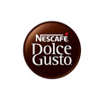
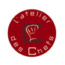
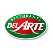
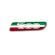
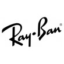

Favoris
-

Machines à café de haute qualité.
- 
- 
- 
-

-

- 
Un cours à L’atelier des Chefs, c’est une savoureuse expérience qui va mettre tous vos sens en éveil !
Cette société conçoit et fabrique des appareils et produits audiovisuels haut de gamme.
Del Arte est une chaîne française du Groupe Le Duff spécialisée dans la restauration rapide artisanale. Creé en 1984 par le groupe Accor, elle propose des pizzas, pastas, dolce et autres spécialités italiennes.
Modèle d’automobile produit par le constructeur italien Fiat.
Emission de télévision automobile hebdomadaire sur M6.
Marmiton.org est un site internet français proposant des recettes de cuisine et conseils culinaires.
site destiné à partager des Recettes Cucpakes, des Idées, de l'Actualité autour de ces petits gâteaux d'origine Anglaise.
77 000 recettes de cuisine commentées par Chef Damien et Chef Christophe. Le plus grand choix de recettes de cuisine du web est sur 750 Grammes !
Le webzine incontournable autour des Cockatils !
Spotify est un service suédois de streaming musical sous la forme d'un logiciel propriétaire et d'un site internet.
Constructeur italien mondialement connu, implanté à Pontedera, près de Pise, qui produit des motos, scooters et cyclomoteurs.
Ray-Ban est le leader mondial du marché des lunettes haut de gamme, et de loin la marque de lunettes la plus vendue au monde.
L'application Cuisine de référence ! Chaque jour, des idées recettes faciles et de saison. Recherche rapide parmi 50 000 recettes.
YouTube est un site web d’hébergement de vidéos sur lequel les utilisateurs peuvent envoyer, regarder et partager des vidéos.